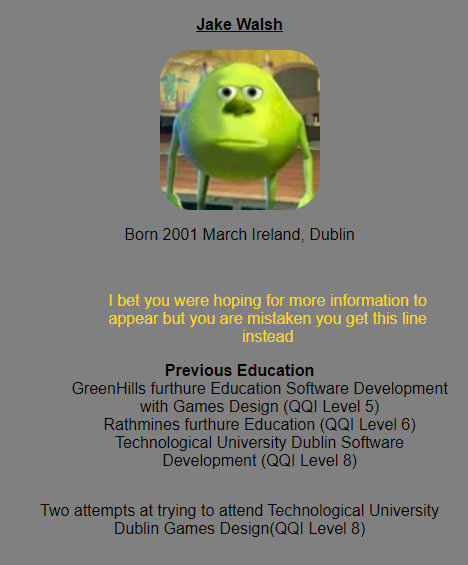

What is CSS?
CSS stands for Cascading Style Sheets. It is the language for describing the presentation of Web pages, including colours, layout, and fonts, thus making our web pages presentable to the users
CSS stands for Cascading Style Sheets. It is the language for describing the presentation of Web pages, including colours, layout, and fonts, thus making our web pages presentable to the users
The example of css styling is apperant when simple structures are taken away such as simply removing the box shadow and border color, makes it so that everything looks the same even if they within different containers
Simply put it is the user who determines the the relative content studies show that we don't read webpages we scan them for what it is we are looking for
So simply making something stand out slightly will draw in your user's attention
An example of poor styling effecting other pages
You've got text align more to the right a highlight useless piece of information the flow of this layout is chatoic and something which should always be avoided
Like we talked about before there are three constant question which you should always be referring back to
Choose your methodology or framework and stay consistent with your rules when coding the web layout of the CSS.
With a poorly-designed system it will break down immediately.
Pick you methodology and framework (or a lack of one), and when your confident in your choices, put your head down,get to work and be predictable and consistent.
What does it mean?
To be brief and clear, in other words, keep it simple enough to understand.
You don't want to write a complicated CSS system otherwise other developers will find it hard to follow it consistently and unaminously.
When implementing styles in CSS, ask yourself the three questions.
Visual Hierarchy is the arrangement of elements in order of importance.This can be done by:
Color is the most important aspect of website design as bright colors can attract the reader to that specific part of the page where the content is situated.
With many people using their, it is important to consider buidling your website with a responsive layout where your website can adjust to different screen.
With a lot of users using the phone to browse the internet, it would be a good idea to implement media screen in the CSS when designing a website.